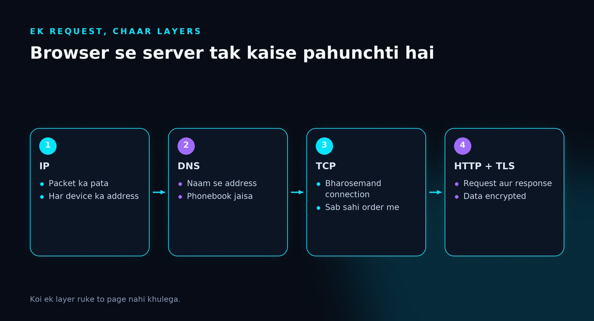
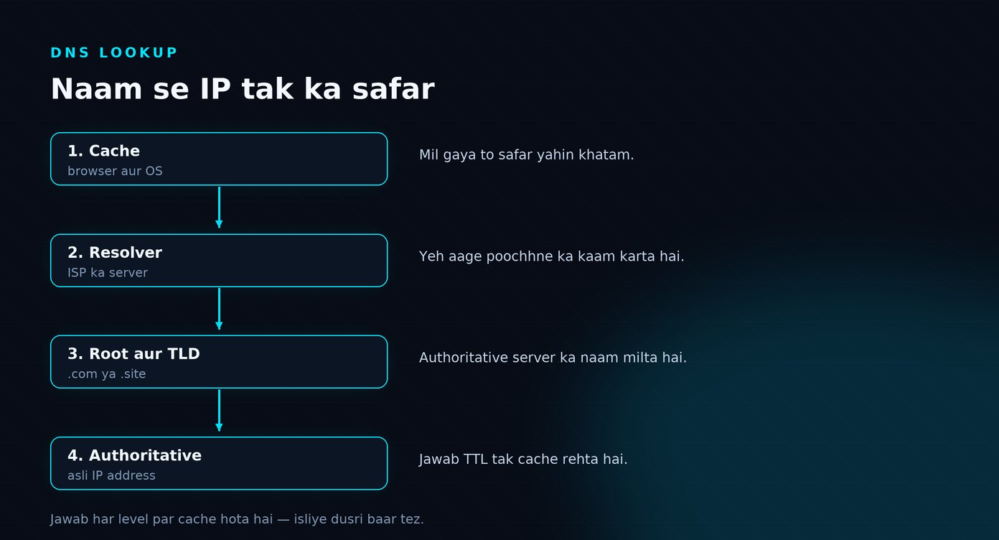

Internet Kaise Kaam Karta Hai: DNS, IP aur HTTP Aasan Bhasha Me
आप फ़ोन में vktechlearn.site टाइप करते हैं और दो सेकंड में पेज खुल जाता है। इस बीच आपके फ़ोन से लेकर किसी दूसरे शहर के server तक कम से कम छह अलग-अलग चीज़ें काम करती हैं — और उनमें से एक भी रुक जाए तो पेज नहीं खुलता। ज़्यादातर लोग इंटरनेट को "हवा में तैरता जादू" समझते हैं, पर असल में यह तार, router, और छोटे-छोटे packets का एक बहुत बड़ा network है।
इस guide में मैं वही सफ़र शुरू से खोलूँगा — internet असल में क्या है, data छोटे टुकड़ों में क्यों जाता है, IP address क्या होता है, DNS नाम को address में कैसे बदलता है, HTTP browser और server की भाषा कैसे बनता है, और एक page load में असल में क्या-क्या होता है। बीच में वे पाँच कारण भी आएँगे जिनकी वजह से कोई site नहीं खुलती।
छोटा जवाब: Internet अलग-अलग networks का network है जो IP protocol पर बात करता है। आपका browser पहले DNS से पूछता है कि इस नाम का IP address क्या है, फिर उस address पर HTTP request भेजता है, server जवाब में HTML भेजता है, और browser उसे screen पर बना देता है। बीच का सारा data छोटे packets में टूटकर अलग-अलग रास्तों से जाता है और मंज़िल पर फिर जुड़ जाता है।
Internet kya hai — cable, router aur packet
सबसे पहले एक गलतफहमी दूर करें: internet किसी एक कंपनी का नहीं है और किसी एक server पर नहीं चलता। यह हज़ारों networks का आपस में जुड़ा हुआ समूह है — इसीलिए इसे "network of networks" कहते हैं। आपके घर का router आपके ISP (Jio, Airtel, BSNL) के network से जुड़ता है, वह ISP दूसरे ISPs से, और वे सब मिलकर समुद्र के नीचे पड़े fibre optic cables तक पहुँचते हैं।
हाँ, समुद्र के नीचे cables। दुनिया का लगभग पूरा अंतरदेशीय data इन्हीं cables से जाता है, satellite से नहीं। जब आप भारत से किसी अमेरिकी site को खोलते हैं, तो आपका request मुंबई या चेन्नई के landing station से होते हुए किसी submarine cable पर चढ़ता है और दूसरे छोर पर उतरता है। यह सफ़र मिलीसेकंड में होता है, इसलिए हमें लगता है कि सब कहीं नहीं है।

इस पूरे system को समझने का सबसे आसान तरीका है layers में देखना। सबसे नीचे है IP — जो packets को पते तक पहुँचाता है। उसके ऊपर DNS — जो नाम को address बनाता है। फिर TCP — जो दोनों तरफ़ भरोसेमंद connection बनाता है। सबसे ऊपर HTTP — जो बताता है कि कौन सा page माँगना है और जवाब कैसा दिखेगा। और आजकल HTTP के नीचे एक और layer है, TLS, जो सारी बातचीत को encrypt कर देती है।
Packet switching: data tukdon me kyun jata hai
अगर आप 5 MB की कोई photo भेजते हैं, तो वह एक टुकड़े में नहीं जाती। वह हज़ारों छोटे packets में टूटती है, हर packet पर एक header लगता है जिसमें लिखा होता है कि यह किसका है, किसको जाना है और किस नंबर का टुकड़ा है। यही तरीका packet switching कहलाता है।
पुराने telephone network में जब आप call करते थे, तो आपके और सामने वाले के बीच पूरी लाइन आपकी हो जाती थी — चाहे आप बोलें या चुप रहें। Internet में ऐसा नहीं होता। आपका packet जब तक रास्ते में है, उसी लाइन पर किसी और का packet भी जा सकता है। हर router देखता है कि अगला कदम कहाँ लेना है, और packet आगे बढ़ा देता है।
इसका सबसे बड़ा फायदा है मज़बूती। अगर बीच का कोई रास्ता बंद हो जाए, तो packets दूसरे रास्ते से चले जाते हैं और आपको पता भी नहीं चलता। नुकसान यह है कि packets अलग-अलग क्रम में पहुँच सकते हैं, इसलिए ऊपर की layer को उन्हें फिर सही क्रम में लगाना पड़ता है — TCP यही करता है।
यही वजह है कि video call में आवाज़ कभी-कभी रुकती है। Video packets को देर हो जाए तो उन्हें फेंक दिया जाता है, क्योंकि दो सेकंड पुराना frame दिखाने से बेहतर है कि अगला frame दिखे। लेकिन file download में ऐसा नहीं होता — वहाँ हर packet ज़रूरी है, इसलिए गुम packet दोबारा माँगा जाता है।
IP address: har device ka pata
IP address वह पता है जिस पर packet पहुँचाया जाता है। आज दो versions चल रहे हैं: IPv4, जैसे 142.250.183.78, और IPv6, जैसे 2404:6800:4009:82f::200e. IPv4 में कुल 4.3 अरब address हैं और वे लगभग खत्म हो चुके हैं, इसलिए IPv6 धीरे-धीरे जगह ले रहा है।
एक बात जो शुरुआत में उलझाती है — आपके घर का public IP और आपके laptop का private IP अलग होते हैं। घर के अंदर laptop को router 192.168.1.5 जैसा private address देता है। बाहर की दुनिया को सिर्फ़ router का public IP दिखता है। जब आप कोई request भेजते हैं, तो router उसे अपने public IP से बाहर भेजता है और जवाब आने पर याद रखता है कि यह किस device के लिए था। इस तरह हज़ारों घर एक ही public IP साझा कर लेते हैं।
DHCP वह system है जो यह private address अपने आप देता है। जब आप फ़ोन WiFi से जोड़ते हैं, तो router DHCP से कहता है "इसे एक address दे दो", और फ़ोन को IP, gateway और DNS server की जानकारी मिल जाती है। इसीलिए अगर WiFi जुड़ा है पर internet नहीं चल रहा, तो अक्सर DHCP या DNS की सेटिंग में गड़बड़ होती है।
DNS: naam se address tak
इंसान नाम याद रखता है, machine address. DNS वही अनुवाद करता है — vktechlearn.site जैसे नाम को किसी IP address में बदल देता है। इसे internet की phonebook कहना ठीक है, बस यह phonebook किसी एक जगह नहीं रहती; यह दुनिया भर में फैली हुई है और हर level पर अलग server है।

जब आप पहली बार कोई site खोलते हैं, तो lookup कुछ इस क्रम में होता है। पहले browser अपना cache देखता है, फिर operating system का। न मिले तो request आपके ISP के resolver के पास जाता है। Resolver सीधे जवाब नहीं जानता, इसलिए वह root server से पूछता है — root कहता है "इस TLD के लिए उस server से पूछो"। TLD server (.site, .com) बताता है कि उस domain के authoritative nameserver कौन हैं। अंत में वही nameserver असली जवाब देता है — यानी IP address।
तीन बातें इस process में मायने रखती हैं। पहली — cache: हर step पर जवाब कुछ समय के लिए याद रखा जाता है, इसीलिए दूसरी बार वही site जल्दी खुलती है। दूसरी — TTL: हर record के साथ लिखा होता है कि इसे कितनी देर याद रखना है। तीसरी — nameserver: आपका domain किस server की सुनता है, यह आपके registrar पर सेट होता है। अगर आपने hosting बदली और nameserver नहीं बदले, तो site नई जगह से नहीं खुलेगी।
DNS में गड़बड़ होने पर error साफ़ दिखता है — "DNS_PROBE_FINISHED_NXDOMAIN" का मतलब है नाम मिला ही नहीं, और "DNS_PROBE_FINISHED_NO_INTERNET" का मतलब है request बाहर ही नहीं गया। दोनों अलग समस्याएँ हैं, इसलिए पहले error पढ़ें, फिर मोबाइल data पर try करें। अगर मोबाइल data पर site खुल जाए, तो समस्या आपके WiFi या ISP के DNS में है।
HTTP: browser aur server ki bhasha
Address मिल जाने के बाद browser उस IP पर एक HTTP request भेजता है। HTTP एक text-based protocol है — यानी request असल में कुछ lines का text होता है जिसमें method, path, headers और कभी-कभी body होती है। सबसे आम method है GET, जो कहता है "यह चीज़ दो"।
GET /posts/internet-kaise-kaam-karta-hai-hindi.html HTTP/2
Host: vktechlearn.site
Accept: text/html
User-Agent: Mozilla/5.0Server जवाब में status code, headers और body भेजता है। Status code का पहला अंक ही बहुत कुछ बता देता है: 2xx ठीक, 3xx कहीं और जाओ, 4xx तुम्हारी request में गड़बड़, 5xx server में गड़बड़। इसीलिए 404 का मतलब है "पेज नहीं मिला" और 500 का मतलब है "server टूट गया" — दोनों में फर्क जानना debugging में सबसे पहला कदम है।
| Method | काम | आम उदाहरण |
|---|---|---|
| GET | कुछ पढ़ना | Page या image माँगना |
| POST | नया data भेजना | Form submit करना |
| PUT / PATCH | मौजूद data बदलना | Profile update |
| DELETE | हटाना | Post delete करना |
Headers में वह जानकारी होती है जो body से अलग है — कौन सा browser है, कौन सी language चाहिए, cache करना है या नहीं, cookie क्या है। जवाब में Content-Type बताता है कि body HTML है या JSON या image, और Cache-Control बताता है कि इसे कितनी देर याद रखना है। अगर किसी API का जवाब browser में कच्चा text दिख रहा है, तो अक्सर Content-Type गलत सेट हुआ होता है।
Ek page load ka poora safar
अब सब जोड़कर देखें कि जब आप URL टाइप करके Enter दबाते हैं, तो क्रम में क्या होता है।
- Browser URL पढ़ता है और तय करता है कि यह search है या address.
- अगर HTTPS है, तो पहले server से secure connection बनता है — TLS handshake.
- DNS से domain का IP address मिलता है (या cache से आता है)।
- Browser उस IP के 443 port पर TCP connection जोड़ता है।
- HTTP request जाती है — कौन सा page, कौन सा browser, कौन सी language.
- Server HTML लौटाता है, अक्सर पहले कुछ KB ही, ताकि browser काम शुरू कर सके।
- Browser HTML पढ़कर CSS, JavaScript और images के लिए नई requests भेजता है।
- CSS आते ही page का layout बनता है, JavaScript आते ही interactivity जुड़ती है।
- तीसरे पक्ष के tools (analytics, fonts, ads) की requests भी चलती हैं — यहीं सबसे ज़्यादा देर होती है।
- सब कुछ आने पर page पूरा बन जाता है और आप उसे पढ़ पाते हैं।
इस पूरे सफ़र में सबसे धीमा हिस्सा अक्सर server नहीं होता, बल्कि network और browser होते हैं। एक औसत page में 50–100 requests होती हैं, और हर नई connection में कुछ मिलीसेकंड लगते हैं। इसीलिए "server तेज़ करो" से पहले यह देखना ज़रूरी है कि समय कहाँ जा रहा है — इसी पर हमारी Core Web Vitals guide में detail है।
HTTP/1.1, HTTP/2 aur HTTP/3
HTTP का नाम वही है, पर उसके नीचे का तरीका बदलता रहा है। HTTP/1.1 में एक connection पर एक ही request एक बार में चलती थी, इसलिए browser कई connections खोलता था — और हर connection का अपना overhead था।
| Version | क्या नया | असर |
|---|---|---|
| HTTP/1.1 | एक connection, एक request | कई connections, header हर बार दोहराया |
| HTTP/2 | एक connection पर कई requests, header compression | तेज़, पर packet loss पर सब रुकता है |
| HTTP/3 | TCP की जगह QUIC (UDP पर) | खराब network पर भी कम रुकावट |
आपको इन versions को configure नहीं करना पड़ता — CDN और hosting अक्सर अपने आप HTTP/2 या HTTP/3 दे देते हैं। पर एक चीज़ ध्यान रखें: HTTP/2 और HTTP/3 के लिए HTTPS ज़रूरी है। इसलिए आज SSL सिर्फ़ security नहीं, speed का भी हिस्सा है। इस पर अलग guide है — HTTP से HTTPS.
Jab site nahi khulti — paanch common wajah
1. DNS resolve नहीं हो रहा। नाम का address नहीं मिला। कारण: nameserver गलत, record हट गया, या domain expire हो गया। जाँच: किसी दूसरे network पर खोलें, और nslookup या dig चलाएँ।
2. Connection बन ही नहीं रहा। Address मिल गया पर server जवाब नहीं दे रहा। कारण: server बंद, firewall port block कर रहा है, या गलत port. जाँच: curl -v से देखें कि connection step तक पहुँचा या नहीं।
3. Certificate की समस्या। Browser "Not secure" या "certificate expired" कहता है। कारण: certificate expire, गलत domain के लिए बना, या chain अधूरी। जाँच: browser में certificate देखें और expiry date पढ़ें।
4. 404 या 403। Server जवाब दे रहा है पर चीज़ मिल नहीं रही या permission नहीं है। यह network की नहीं, configuration की समस्या है।
5. Page खुल रहा है पर टूटा दिख रहा है। HTML आ गया, CSS या JavaScript नहीं आया। अक्सर path गलत होता है — जैसे /img/... की जगह img/.... Browser के Network tab में लाल entries यही बताती हैं।
Mera anubhav
शुरुआत में जब कोई site नहीं खुलती थी, मैं सीधे hosting के support को message कर देता था। एक बार जवाब आया — "आपका domain हमारे पास नहीं है" — और तब समझ आया कि समस्या सिर्फ़ nameserver की थी। उस दिन के बाद मैंने एक आदत बनाई: पहले तीन चीज़ें क्रम से देखना — DNS resolve हो रहा है या नहीं, port 443 खुला है या नहीं, और certificate valid है या नहीं।
दूसरी चीज़ जो मैंने सीखी: browser का Network tab सबसे ईमानदार जवाब देता है। वह बताता है कि कौन सी request कितने समय में आई, किसने रोका और कौन सा status code लौटा। जब मैंने एक बार "site धीमी है" की शिकायत पर Network tab खोला, तो पता चला कि असली कारण एक third-party font था जो 4 सेकंड ले रहा था — server बिल्कुल ठीक था।
तीसरी बात: "इंटरनेट बंद है" और "site बंद है" दोनों अलग हैं। एक ही WiFi पर दूसरी site खुल जाए, तो आपका internet ठीक है — समस्या उस एक site की है। यह छोटी जाँच आधे confusion की जड़ काट देती है।
नतीजा
Internet cables, routers और packets का एक बड़ा network है जो IP पर चलता है। नाम को address में DNS बदलता है, address पर पहुँचने का रास्ता TCP बनाता है, और browser-server की बातचीत HTTP में होती है — आजकल TLS की सुरक्षा के साथ। कोई site न खुले तो क्रम से देखें: DNS, connection, certificate, status code और फिर assets. यही पाँच जाँचें 90% समस्याएँ पकड़ लेती हैं।
आगे पढ़ने के लिए: DNS records की guide में A, CNAME और MX को detail में समझाया है, और web hosting वाली guide बताती है कि server कहाँ रखा जाता है और कौन सा plan आपके लिए सही है।
अक्सर पूछे जाने वाले सवाल
क्या internet और WiFi एक ही चीज़ है?
नहीं। WiFi सिर्फ़ आपके device को router तक जोड़ने का तरीका है। Internet उससे आगे का पूरा network है।
IP address बदलता क्यों है?
घर के public IP अक्सर ISP समय-समय पर बदलता है, और private IP router हर बार नया दे सकता है। यह सामान्य है।
DNS cache कैसे साफ़ करें?
Windows में ipconfig /flushdns, macOS में sudo dscacheutil -flushcache. Browser का अपना cache भी होता है, उसे settings से साफ़ करें।
HTTP में data encrypt होता है क्या?
नहीं। सादा HTTP plain text है। Encryption TLS से आता है, यानी HTTPS में।
एक page के लिए कितनी requests सामान्य हैं?
कोई तय संख्या नहीं, पर 50–100 आम है। जितनी कम और जितनी हल्की, उतना तेज़।